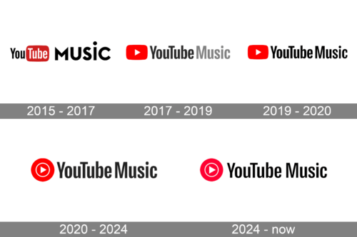

YouTube's Unique Approach to Music Discovery
YouTube Music combines traditional audio analysis with video engagement data to create a unique recommendation system that understands not just what you listen to, but how you engage with music content.
Video Engagement Data

YouTube Music leverages its vast video platform to understand user preferences through:
- Watch time and completion rates
- Comment interactions
- Like and dislike patterns
- Video recommendations
Hybrid Recommendation System
The platform combines multiple data sources to create personalized experiences:
- Audio content analysis
- User search history
- Playlist creation patterns
- Cross-platform listening habits